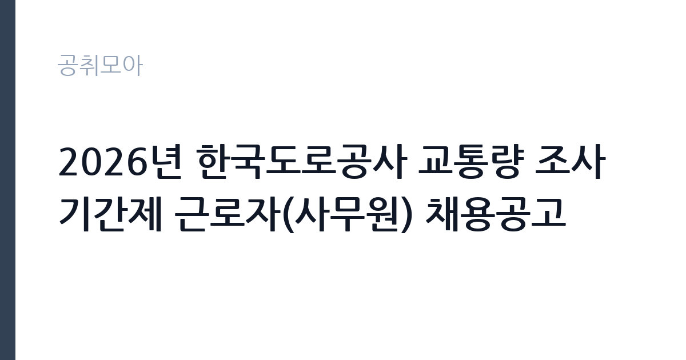

[공공기관] 2026년 한국도로공사 교통량 조사 기간제 근로자(사무원) 채용공고
한국도로공사 · 경북 · 마감 2026-10-28 (D-14) · 출처 나라일터

한눈에 보는 모집 조건
| 기관 | 한국도로공사 |
|---|---|
| 공고명 | 2026년 한국도로공사 교통량 조사 기간제 근로자(사무원) 채용공고 |
| 고용형태 | 기간제 |
| 근무지 | 경북 |
| 게시일 | 2026-10-15 |
| 마감일 | 2026-10-28 (D-14) |
지원자격, 이렇게 읽으세요
- 기간제근로자(사무원) 2명
- 접수 ~2026-10-28 마감
- 세부 조건은 원문 공고문 확인
지원자격에 연령과 성별, 학력 제한이 명시되어 있지 않아 누구나 지원할 수 있습니다. 우대 조건은 엑셀 활용 능통자와 교통공학 관련 자격증 소지자로, 실제 업무가 교통량 조사 자료의 집계와 정리에 집중됨을 보여줍니다. 결격 사유로는 타 공공기관에서 부정 채용으로 채용이 취소된 이력이 있는 경우 응시가 불가합니다. 함정은 근무지가 김천 본사 교통처라는 점으로, 통근이나 거주 문제를 미리 따져봐야 합니다. 우편과 이메일 접수이므로 첨부파일의 제출 서류 목록을 먼저 확인하시기 바랍니다.
이 공고의 포인트
이 공고의 포인트는 업무 범위가 명확하다는 점입니다. 교통량 조사 자료의 사무 처리가 주 업무라 행정과 사무 보조 경력을 쌓기에 좋습니다. 근무 기간이 약 5개월로 정해져 있어 단기 경력 공백을 메우거나 공공기관 근무 경험을 쌓으려는 분께 적합합니다. 모집 인원이 2명으로 적지만 응시 자격 제한이 없어 경쟁이 붙을 수 있으니, 엑셀 능력과 관련 자격을 서류에서 부각하는 것이 중요합니다. 접수 마감이 10월 28일로 여유가 있으니 서류를 충실히 준비하시기 바랍니다.
전형은 어떻게 진행되나
세부 전형 단계는 원문 공고문의 첨부파일에서 확인하셔야 합니다. 기간제 사무원 채용은 서류심사와 면접으로 진행되는 경우가 일반적이며, 우대 조건 해당 여부가 서류 평가의 핵심이 됩니다. 우편 접수 시 마감일 도착분 기준인지 발송일 기준인지 원문에서 확인하고, 이메일 접수는 접수 확인 회신을 챙기시기 바랍니다. 면접에서는 엑셀 실무 능력과 5개월 근무 가능 여부를 직접 묻는 경우가 많으니 근무 기간 준수 의지를 명확히 밝히시기 바랍니다.
원문에서 확인한 전형 방식
○ 모집분야 : 교통량조사 기간제근로자(사무원) ○ 채용인원 : 2명 ○ 접수기간 : 2026년 10월 15일 ~ 2026년 10월 28일 ○ 근무기간 : 2026년 11월 16일 ~ 2027년 4월 15일 (약 5개월) ○ 근무지 : 한국도로공사 교통처(경북 김천시 혁신8로 77) ○ 자격요건 : 연령, 성별 제한 없음, 엑셀 활용 능통자 및 교통공학 관련 자격 소지자 우대 ※ 타 공공기관에서 부정한 방법으로 채용된 사실이 적발되어 채용이 취소된 자는 응시 불가 ○ 접수방법 : 우편 혹은 E-mail 접수(첨부파일 참고) ○ 문의처 : 054-811-2614
이런 분께 추천해요
- 공공기관 사무 보조 경력을 쌓고 싶은 구직자
- 엑셀 활용 능력과 교통공학 관련 자격을 가진 분
- 2026년 11월부터 약 5개월간 근무 일정이 가능한 분
지원 전 체크리스트
- 우편 접수 시 마감일 기준(도착분인지 발송분인지)을 원문에서 확인했습니다
- 엑셀 활용 능력과 자격증을 증빙할 서류를 준비했습니다
- 김천 근무(통근이나 거주) 가능 여부를 따져봤습니다
- 부정 채용 이력 등 응시 불가 사유에 해당하지 않는지 확인했습니다
모집 일정과 제출 타이밍
접수는 10월 15일부터 28일까지 2주간으로 여유가 있습니다. 우편 접수는 배송에 2일에서 3일이 걸리므로 늦어도 25일에는 발송하시기 바랍니다. 근무 시작일은 11월 16일이므로 합격 후 출근까지 약 2주에서 3주의 준비 기간이 있습니다. 근무 종료일이 2027년 4월 15일로 정해져 있어 이후 진로 계획도 함께 세워 두시기 바랍니다.
직무 이해하기: 공공기관
교통량 조사 사무원은 고속도로 교통량 조사 자료의 수집과 검증, 집계, 엑셀 정리를 맡습니다. 한국도로공사 교통처는 고속도로 교통 통계와 수요 예측, 통행료 정책 자료를 생산하는 부서로, 조사 자료의 정확성이 정책 기초 자료가 됩니다. 실무에서는 조사표 입력과 오류 검수, 월별 집계표 작성, 보고서 보조가 반복되므로 꼼꼼함과 엑셀 함수 활용 능력이 중요합니다.
자기소개서 작성 팁
사무 보조직 자기소개서는 실무 즉시 투입 가능성을 보여주는 것이 핵심입니다. 엑셀 활용 경험을 구체적으로 쓰시기 바랍니다. 예를 들어 다룰 수 있는 함수나 다뤄본 자료 규모, 오류 검수 경험을 적으면 설득력이 높아집니다. 교통공학 관련 자격이 있다면 취득 과정과 활용 계획을 연결해 쓰시기 바랍니다. 5개월 근무 가능 사유를 명확히 밝혀 중도 퇴사 우려를 낮추는 것도 중요합니다.
면접 준비 포인트
면접에서는 엑셀 실무 능력과 근무 기간 준수 의지를 묻는 경우가 많습니다. 대용량 자료를 다뤄본 경험, 오류를 찾아낸 경험, 반복 업무를 견디는 본인만의 방법을 준비하시기 바랍니다. 교통량 조사의 목적(교통 정책 기초 자료)을 이해하고 있다는 점을 보여주면 좋은 평가를 받을 수 있습니다. 김천 근무 가능 여부를 명확히 답할 수 있게 준비하시기 바랍니다.
급여·근무조건 읽는 법
이 공고의 급여는 원문상 회사 내규에 따른다고 안내되어 있어, 정확한 금액은 원문 공고문의 첨부파일에서 확인하셔야 합니다. 한국도로공사 기간제 근로자 보수는 통상 월급제로 책정되며 4대보험이 적용됩니다. 식비나 교통비 등 실비 지원 여부도 공고문마다 다르므로 첨부파일의 근로조건 항목을 확인하시기 바랍니다. 실수령액은 세전 월급에서 4대보험 본인부담금과 소득세를 제외한 금액이 됩니다.
자주 묻는 질문
- 연령이나 학력 제한이 있나요?
원문 발췌상 연령과 성별 제한이 없으며 학력 제한도 명시되어 있지 않습니다. 엑셀 활용 능통자와 교통공학 관련 자격 소지자는 우대합니다. - 근무지와 근무 기간은 어떻게 되나요?
근무지는 경북 김천시 혁신도시에 있는 한국도로공사 교통처이며, 근무 기간은 2026년 11월 16일부터 2027년 4월 15일까지 약 5개월입니다. - 접수 방법은 어떻게 되나요?
우편 또는 이메일로 접수하며 기간은 10월 15일부터 28일까지입니다. 제출 서류 목록과 접수처는 원문 첨부파일에서 확인하시기 바랍니다.
함께 보면 좋은 공고
[공공기관] 2026년도 제4분기 체험형 인턴 채용 공고(장애인 채용) — 마감 2026-10-29[공공기관] 2026년도 제4분기 체험형 인턴 채용 공고(인턴사무원) — 마감 2026-10-29[공공기관] 2026년도 제4분기 체험형 인턴 채용 공고(인턴연구원) — 마감 2026-10-29출처: 나라일터 공개정보를 바탕으로 공취모아가 정리한 안내글입니다. 모집 조건·일정은 변경될 수 있으니 지원 전 반드시 원문 공고문을 확인하세요. 본 글은 정보 제공용이며 합격을 보장하지 않습니다.